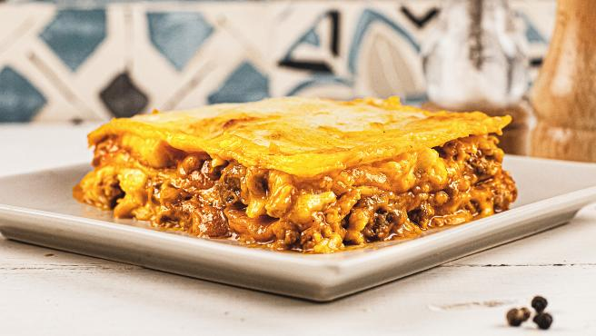

Las gratuitas clases de yoga que se harán por Instagram todos los días
No te quedes en casa sin ejercitarte. Por lo mismo, la instructora conocida en Redes Sociales como Yoga Woman, hará todos los días, a las 7 PM, clases gratuitas para practicar con tu familia.
Receta de lasaña de carne y verduras especial para niños
Esta receta de lasaña no está sacada de un antiguo recetario italiano, ni aprendimos a hacerla en la entrañable cocina de una octogenaria durante unas vacaciones en la Toscana. Es la receta de la familia, la que siempre hacemos y la que los niños de la casa, como suele pasar, consideran que es la mejor del mundo, simplemente porque es la de su madre.
Cuándo se estrena la tercera temporada de Dark
Este mes llega a Netflix la tercera temporada de Dark, uno de los estrenos más esperados del año. La serie alemana sigue siendo furor y las expectativas por su temporada final crecen día a día.